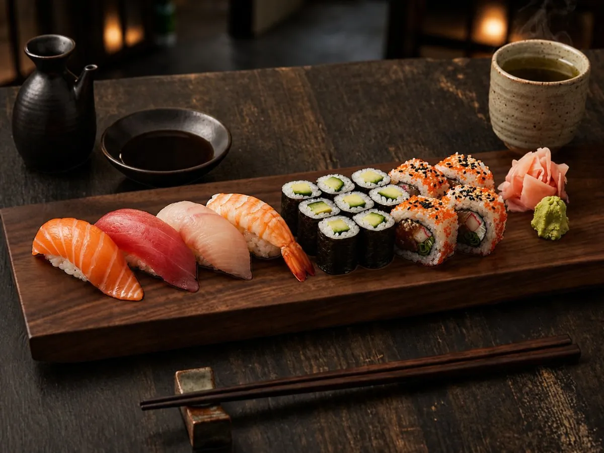

Sushi in Nijmegen: de beste adressen per situatie
Gepubliceerd op 14 februari 2023, bijgewerkt op 25 november 2026
Onderdeel van de gids Restaurants in Nijmegen

Zin in sushi in Nijmegen? Je kunt in de stad op tientallen plekken sushi eten, maar niet elke zaak past bij elke avond. Wil je aan tafel met uitzicht op de Waal, de hele avond onbeperkt doorbestellen of gewoon op de bank blijven zitten? Hier staan de beste adressen voor sushi in Nijmegen, per situatie.
Zo hebben we gekozen
We lazen in november 2026 de websites van de sushizaken in onze bedrijvengids. Per situatie kozen we de zaken die er echt iets eigens aan toevoegen. Openingstijden en prijzen veranderen weleens, dus kijk even op de site van de zaak voordat je gaat.
Sushi eten aan tafel in Nijmegen
iZZi: sushi met de Waal als decor
Aan de Vismarkt in de benedenstad eet je bij iZZi signature rolls, nigiri en sashimi, maar ook dim sum en gerechten van de grill. De kaart is gemaakt om te delen, dus je bestelt samen een paar dingen voor de hele tafel.
Binnen kijk je uit over de rivier, en bij mooi weer zit je op het terras met de zonsondergang boven de Waal. iZZi is van dinsdag tot en met zondag 's avonds open. Een sushibox om mee te nemen bestel je telefonisch.
Goed voor: een etentje met z'n tweeën of een verjaardag.
All you can eat sushi in Nijmegen
Onbeperkt sushi eten voor een vaste prijs is in Nijmegen populair, zeker met een groep. Je bestelt in rondes, meestal twee uur lang. Drankjes betaal je apart.
Tomi Sushi & Grill: twee uur lang bestellen
Vlak bij het Mariënburgplein betaal je bij Tomi een vast bedrag per persoon. Daarna bestel je twee uur lang zoveel sushi en gerechten van de grill als je wilt. Kinderen eten voor een eigen tarief, en je kunt er lunchen, dineren en afhalen.
Ben je jarig en neem je minstens vier volwassenen mee, dan eet jij die dag gratis als je je ID laat zien. Op maandag is Tomi dicht, behalve op feestdagen.
Goed voor: een verjaardag met vrienden.
SUMO in de Molenstraat
De Nijmeegse vestiging van SUMO zit in de Molenstraat. Per ronde bestel je een paar gerechtjes, van sushi tot yakitori van de grill. 's Avonds kies je tussen een gewone en een premiumkaart, en in het weekend kun je er ook lunchen.
Goed voor: uitgebreid proeven midden in de winkelstraten.
Buiten het centrum: Saison en Orient Plaza
- Saison aan de Wijchenseweg, op de Woonboulevard: Japans all you can eat met Aziatische specials zoals dim sum. Je kunt je drankjes in het arrangement meenemen en je parkeert voor de deur.
- Orient Plaza op het Kerkenbos: vier Aziatische restaurants onder één dak. Jiro is het all-you-can-eat sushi- en grillrestaurant, bij Kyoto kijk je hoe de kok op de teppanyakiplaat kookt.
Meer adressen, ook buiten de Japanse keuken, staan in onze gids all you can eat in Nijmegen.
Sushi laten bezorgen in Nijmegen
Sushi Maison: party boxen en veel veggie
Vanuit de Couwenbergstraat bezorgt Sushi Maison klassiekers als nigiri en maki, maar ook special rolls met geflambeerde zalm, sushitaco's en sushisandwiches. Er is een flinke vegetarische hoek, met veggie rolls en vega 'zalm'.
Voor een groep zijn er party boxen en sushiboten, en voor kinderen een kidsbox. Sushi Maison is elke dag vanaf het middaguur open.
Goed voor: een feestje thuis.
Mr. Sushi: midden in het centrum
Aan Plein 1944 maakt Mr. Sushi rolls, temaki en poké bowls vers in de eigen keuken. Naast gerechten met vis en vlees staan er vega en vegan opties op de kaart.
De zaak bezorgt elke dag van twee uur 's middags tot half tien 's avonds. Bestel je vooraf online, dan staat je box vaak al klaar als je hem ophaalt.
Goed voor: wie in of rond het centrum woont.
Komo Sushi: sushi en Korean fried chicken
Vanuit de Horstacker in Lindenholt bezorgt Komo Sushi nigiri, maki en rolls met gevlamde zalm of truffel. Er staan ook Korean fried chicken, gyoza en mochi-ijs op de kaart, en bij je eten bestel je bubble tea. Er is een veggie box met vegetarische en vegan rolls.
Goed voor: wie in Lindenholt of Dukenburg woont.
Shimeiwei Sushi: gefrituurde sushi in Lent
In Lent rolt Shimeiwei maki, uramaki, nigiri en handrollen, maar ook gefrituurde sushi en sushisandwiches. Liever iets warms? Kies zelfgemaakte loempia's, yakitori of karaage. Veganisten vinden tofu- en avocadonigiri en speciale vegaboxen. Op maandag is de zaak dicht.
Goed voor: wie aan de noordkant van de Waal woont.
Sushi afhalen
Sushi Toku: gewoon even bellen
In de Hertogstraat bestel je nog ouderwets per telefoon, elke dag vanaf tien uur 's ochtends. Je haalt je sushi op of laat hem bezorgen. Volgens veel Nijmegenaren is dit de lekkerste sushi om mee te nemen.
Op de kaart staan nigiri met zalm, tonijn, paling of zeebaars, en vegetarische keuzes als avocado, tamago en inari met tofu.
Goed voor: wie liever belt dan een app gebruikt.
Sushi Daily: al vanaf de ochtend
Aan de St. Jacobslaan rolt Sushi Daily de sushi met de hand, en vaak zie je de makers aan het werk. Je kiest uit maki, nigiri, crunch rolls, poké bowls en bentoboxen, ook vegetarisch en vegan. Van maandag tot en met zaterdag ben je er al vanaf acht uur 's ochtends welkom, op zondag vanaf het middaguur.
Goed voor: een snelle lunch of een bakje voor onderweg.
Ook goed voor bezorgen en afhalen
- Ookini in de Van Welderenstraat: nigiri, maki, sashimi, poké bowls en gyoza, met grote sets om te delen.
- Oyasushi op het Zwanenveld bij station Dukenburg: sushi en poké bowls, met een flinke vegetarische keuze.
- SHABU To Go in de Molukkenstraat: sushi, poké bowls en grote boxen voor groepen, zeven dagen per week.
- Sjoesie in Bottendaal en I Love Sushi aan de Molenweg: online bestellen en thuis laten bezorgen.
- Orient Drive aan het Kerkenbos: sushi en Chinees-Indisch in één bestelling.
Meer Japans eten: ramen
Japans eten is meer dan sushi. Voor een dampende kom ramen ga je naar Kings of Ramen in de Hertogstraat, waar ook udon, donburi en Japanse curry op de kaart staan. Shibui in de Augustijnenstraat maakt ramen in Sapporo-stijl om af te halen of te laten bezorgen. Meer lees je in ramen in Nijmegen.
Tips voor sushi eten in Nijmegen
- Reserveer bij all you can eat in het weekend, dan zit het vaak vol. Let op de tijdslimiet van meestal twee uur.
- Met kinderen? Bij Tomi, SUMO en Saison eten kinderen voor een eigen tarief mee, en Sushi Maison heeft een kidsbox.
- Geen vis? Bijna elke sushizaak heeft vegetarische rolls. Sushi Maison, Komo, Shimeiwei en Mr. Sushi hebben ook vegan keuzes.
Op zoek naar iets anders? Bekijk ook onze tips voor Aziatisch eten in Nijmegen, Thais eten en alle restaurants in Nijmegen.
Veelgestelde vragen
Waar eet je de lekkerste sushi in Nijmegen?
Voor sushi aan tafel zijn iZZi aan de Vismarkt (met uitzicht op de Waal), Tomi Sushi & Grill en SUMO in de binnenstad populair. Wil je thuis eten, dan zijn Sushi Toku in de Hertogstraat en Sushi Maison in Oost vaste favorieten.
Waar eet je sushi aan het water in Nijmegen?
Bij iZZi aan de Vismarkt kijk je uit over de Waal, en bij mooi weer zit je op het terras.
Waar kun je all you can eat sushi eten in Nijmegen?
Bij Tomi Sushi & Grill (Klein Mariënburg), SUMO (Molenstraat), Saison (Wijchenseweg) en Jiro bij Orient Plaza (Kerkenbos). Je betaalt een vast bedrag per persoon en bestelt in rondes.
Kun je in Nijmegen sushi laten bezorgen?
Ja. Onder meer Sushi Maison, Mr. Sushi, Komo Sushi, Shimeiwei, Ookini, SHABU To Go, Sjoesie en I Love Sushi bezorgen in Nijmegen. Kijk per zaak welke wijken ze bedienen.
Waar haal je 's ochtends al sushi in Nijmegen?
Sushi Daily aan de St. Jacobslaan is van maandag tot en met zaterdag vanaf acht uur open.
Waar eet je ramen in Nijmegen?
Bij Kings of Ramen in de Hertogstraat ga je aan tafel; Shibui in de Augustijnenstraat maakt ramen om af te halen of te laten bezorgen.
Sushi en Japans eten in Nijmegen
Zin om te beginnen? In onze bedrijvengids vind je alle 24 sushi- en Japanse restaurants in Nijmegen, met openingstijden, kenmerken en een kaart.
Bekijk alle 24 sushi- en Japanse restaurants in Nijmegen
Heb je zelf een sushirestaurant? Laat je hier uitlichten.